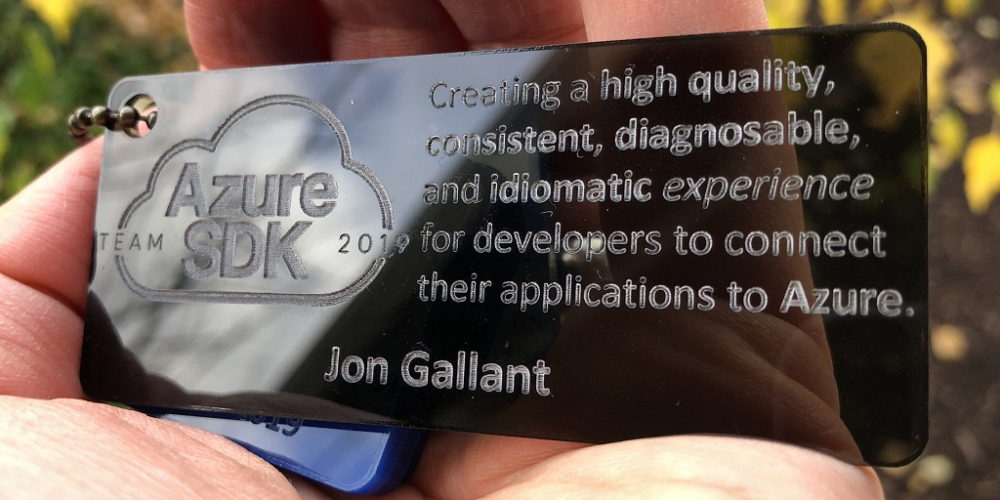

As of 11/4/2019, a few of the New Azure SDKs have hit General Availability! Read more here: Azure SDK Releases
Azure has had a tremendous amount of growth in a very short amount of time. With that growth came a lot of goodness, but also a significant amount of inconsistencies at the SDK surface. While developing for Azure you may have noticed a few ways to authenticate with our SDKs, and a few ways to perform logging, package name differences, and things that just didn’t play nice with your application. We heard our customers loud and clear and, one year ago, decided to fix this problem across all of Azure. We corralled some of the best API and Framework design folks, like Peter Marcu, Jeffrey Richter, and Krzysztof Cwalina and started a new team called the Azure SDK team with the following mission: "Azure SDK Team: Creating a high quality, consistent, diagnosable, and idiomatic experience for developers to connect their applications to Azure."

On a personal note, I worked a lot with the Azure SDK team in my previous role at Microsoft and became super intrigued by the team’s vision and decided to move over to the SDK team last week!
SDK Guidelines
The first objective was to create a set of guidelines that all Azure SDKs will follow to bring consistency across all SDKs. As you can imagine there were many hours of discussions and documentation that went into developing these guidelines, which can now be found here: Azure SDK General Guidelines. General guidelines are great to set a baseline across all languages, but we wanted more. We wanted each of the SDKs to be idiomatic - we want every developer to feel at home in their language of choice - for example, if you are a Python dev, we wanted to make sure that when you are developing with Azure that it fells pythonic and not like you are using APIs created by a Java or .NET dev. So taking that to heart, we also developed guidelines for each of the languages we target including:
GitHub Repos
Each of the SDKs is grouped by language and is linked to from the central Azure SDK repo. For example, all Java SDKs are in the same repo and the same goes for all the other languages. This enables us to easily share code, build systems, and other dependencies across the entire SDK surface for each language. You will find each of the language repos here:
Azure Services
The SDK team obviously couldn’t boil the ocean and ship all new SDKs in one shot, so they had to decide which services to target first. After a lot of data crunching and customer engagement we decided to start with:
- Azure Core - Shared library to be used by all SDKs, logging, retries, etc.
- Azure Key Vault - Store sensitive data.
- Azure Identity - Authenticate against Azure.
- Azure Storage - Store your application data.
- Azure Cosmos DB - Utilize Azure’s multi-model store.
- Azure App Configuration - Store your application’s configuration.
- Azure Event Hubs - Data streaming and event ingestion.
November 2019 GA
The big announcement this week is that some of the SDKs have finally been published as GA (General Availability), which means you can officially start to use them in your applications!
The following SDKs are now GA:
- Azure Core
- Azure Key Vault
- Azure Identity
- Azure Storage
The following SDKs are still in preview, soon to be GA’d:
- Azure Cosmos DB - Utilize Azure’s multi-model store.
- Azure App Configuration - Store your application’s configuration.
- Azure Event Hubs - Data streaming and event ingestion.
Each of the various languages is at different release cycles so please review all of the release notes available here: Azure SDK Releases to determine if the service/language you use has GA’d.
Feature Spotlight: DefaultAzureCredential
One of my favorite new SDK features is Azure Identity’s DefaultAzureCredential(), which searches for Service Principal, Managed Identities, and VS2019 login credentials so you can easily move your code from your dev box to production.
For example, the following code will first check environment variables for Service Principal, then if your app is on an Azure resource that supports Managed Identities will look for that, and finally, it will see if you’ve logged into VS2019.
credential = DefaultAzureCredential()
blobclient = BlobServiceClient(account_url="https://name.blob.core.windows.net/", credential=credential)
This is huge for devs who have had to self manage all the various authentication mechanisms and change them for dev vs prod.
Stay tuned, because I’ll be blogging and creating videos for more SDK features in the coming months.
Azure SDK Videos
Here are some videos from my teammates to help you get started and learn more about the SDKs:
- 15 Minutes to improve your Python App in Azure by Kate Olszewska
- Build a better Java Spring App with Azure by Connie Yau
- Build a better .NET Core Azure Service by Jeffrey Richter
My Ask
My ask is that you start using the SDKs in your new apps, port your existing apps, and give us feedback via GitHub issues - I will see you there.
Links
Azure SDK Documentation
Azure SDK Repo
Azure SDK Twitter @AzureSDK